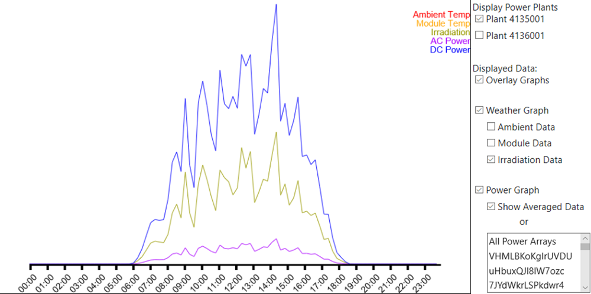
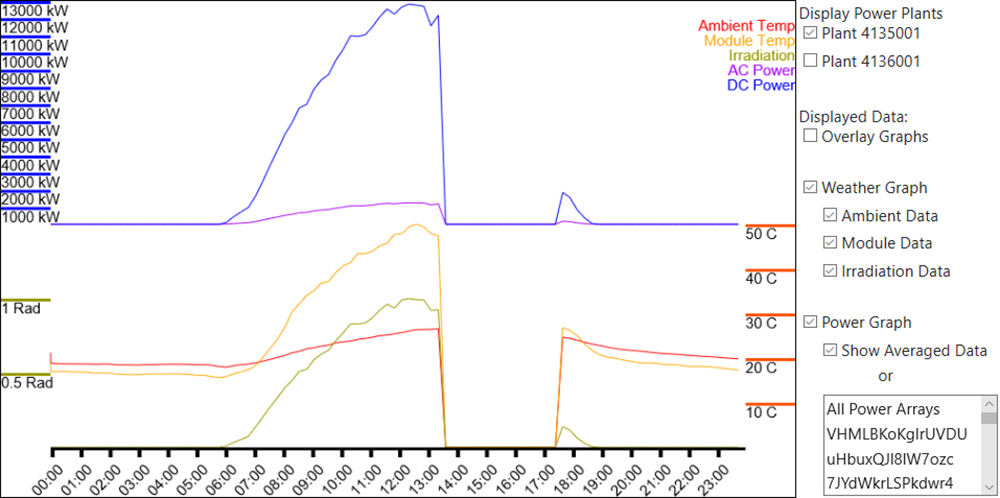

SolarDB is a useful tool which can be used to oversee the overall function of a power plant. The data used can be found here, it was collected from two solar power plants in India over a period of 34 days. There are two versions of SolarDB, the interactive one here is served statically over Github Pages, and has included in it about 8 days' worth of information. The other version is built in .NET Core, complete with a SQL database using EF Core. The .NET Core version is intended to be usable as a tool for any power plant who wishes to efficiently save, log, and display day to day operations.
At the start, the intended goal was to create a tool to alleviate the complexity of managing information for a large facility. As it sits, SolarDB solves its initial goal in saving and displaying information. The only thing it is missing is an API to add more logs to the database. Most of the work has gone into a hand built interactive graph which can be found in the "Graph Tool" navigation link. For me personally, this project was my deepest delve into Javascript because of the graphing tool and its interface.
The information has been broken down into various parts for display.
 SolarDB can answer most of these concerns. The graph tool especially allows for a user to easily see patterns in the data. In this first image it is clear to a user there is a definite ratio between the irradiation values and power output values. This screenshot was taken on the first day, overlaying the irradiation and power graphs for plant 4135001. Knowing this ratio, it should be simple to calculate power generation on average over the course of the next few days, if you have accurate weather forecasting.
Monitoring the irradiation to power output ratio over a period could be used to estimate if an array is in need of cleaning or maintenance.
 Malfunctioning equipment is also easy to spot using the graphing tool. Here on 5/21/2020 you can see the whole plant seems to have gone offline between 1:30pm and 5:00pm. Looking at the full weather sensor graph for the first 8 days shows five different instances when the sensor turned off. Plant 4136001 appears to be suffering a massive issue concerning its power arrays. Browsing specific power arrays in plant 4136001 shows there are many times when an array goes out for a long period of time. The overall output from plant 4136001 is also a tenth of the output of plant 4135001.
At its core, SolarDB is a CRUD application built using .NET Core. It boasts a custom-made graphing tool capable of showing off the data in a useful way for the user. In the future, SolarDB can be upgraded to allow for automatic data analyzation to immediately tag areas of concern for the user. SolarDB would be a perfect tool to help oversee a power plant and act as a solid base to build more tools on top of. If you would like to play with the graphing tool, it can be found here. I hope you enjoyed reading through this quick write up and playing with my graph, I had a lot of fun making this while also learning Javascript and hope you had fun finding ways to break it.
{kind=link}
{kind=link}